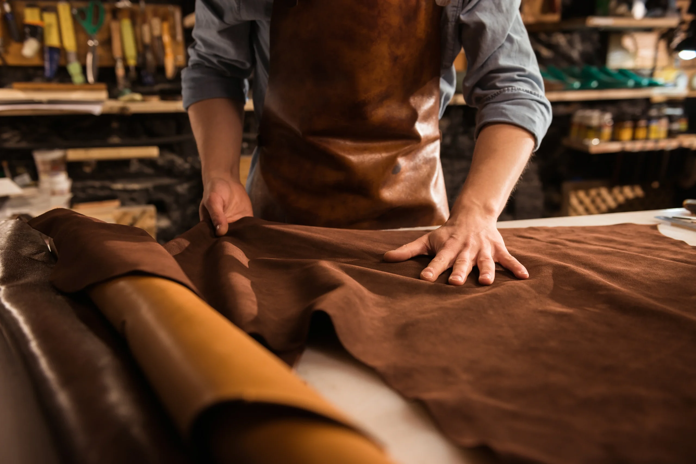

Explore
Manifesto
O valor do que é feito
para atravessar o tempo.
Não criamos apenas acessórios. Cada corte, costura e acabamento preserva o conhecimento de Máximo e transforma couro legítimo em uma peça com autoria.
Carregando vitrine...
0104
Savoir-faire
Antes da marca,
já existiam as mãos.
Máximo é o artesão e a origem da Maximos Signature. É ele quem escolhe, prepara, corta e transforma o couro — peça por peça, em Bauru, São Paulo.
- Matéria
- Couro legítimo
- Produção
- Artesanal
- Origem
- Bauru · SP
Coleção atual
Peças com identidade.
Carregando coleção...
Atendimento direto